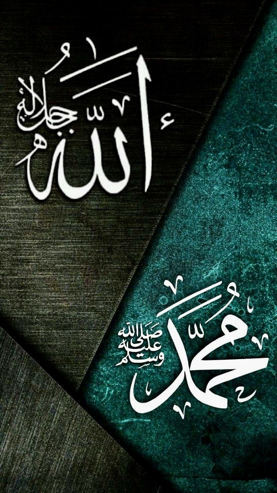

— Mahasiswa Informatika Universitas Islam Negeri Sultan Maulana Hasanuddin Banten
Assalamualaikum, saya
Kirey Harumi
Mari bersama mengenal keindahan nama-nama Allah SWT melalui Asmaul Husna, memperbanyak sholawat kepada Rasulullahﷺ,
01 — Tarikh & Fadhilah
Sejarah & Keutamaan
Asmaul Husna dan Solawat

- 1. Tarikh & Fadhilah Asmaul Husna
Secara syariat,Asmaul Husna. dalah nama-nama Allah yang paling indah, suci, dan agung yang menjadi sarana bagi setiap hamba untuk mengenal kebesaran-Nya (Ma'rifatullah). Sejarah pengenalan nama-nama suci ini diturunkan langsung oleh Allah SWT melalui untaian wahyu Al-Qur'an al-Karim kepada Baginda Nabi Muhammad SAW.
Sebab turunnya (Asbabun Nuzul) ayat tentang Asmaul Husna bermula di kota suci Mekkah, ketika kaum musyrik Quraisy mendengar Rasulullah SAW senantiasa mengetuk pintu langit dengan memanggil "Ya Allah" dan "Ya Rahman" dalam doa-doanya. Dengan penuh kejahilan, mereka menuduh Rasulullah SAW telah melanggar prinsip tauhid dan menyembah dua tuhan yang berbeda.
Guna membantah tuduhan keji tersebut sekaligus menetapkan keluhuran sifat-Nya, Allah SWT menurunkan Surat Al-Isra ayat 110 sebagai ketetapan syariat yang abadi:
قُلِ ادْعُوا اللَّهَ أَوِ ادْعُوا الرَّحْمَٰنَ ۖ أَيًّا مَّا تَدْعُوا فَلَهُ الْأَسْمَاءُ الْحُسْنَىٰ
Katakanlah (Muhammad), "Serulah Allah atau serulah Ar-Rahman. Dengan nama yang mana saja kamu seru, Dia mempunyai Al-Asma'ul Husna (nama-nama yang terbaik)" (QS. Al-Isra: 110).
اللَّهُ لَا إِلَٰهَ إِلَّا هُوَ ۖ لَهُ الْأَسْمَاءُ الْحُسْنَىٰ
"Dialah Allah, tidak ada Tuhan selain Dia. Dia memiliki nama-nama yang paling baik."(QS. Thaha: 8)
Asmaul Husna adalah nama-nama Allah yang indah dan mulia. Dengan mempelajarinya, seorang hamba semakin mengenal sifat Allah seperti Ar-Rahman (Maha Pengasih), Al-Ghafur (Maha Pengampun), dan Ar-Razzaq (Maha Pemberi Rezeki).
وَلِلَّهِ الْأَسْمَاءُ الْحُسْنَىٰ فَادْعُوهُ بِهَا
"Dan Allah memiliki Asmaul Husna, maka berdoalah kepada-Nya dengan menyebut nama-nama itu." (QS. Al-A'raf: 180)
Membaca dan memahami Asmaul Husna menjadi bentuk dzikir yang menghidupkan hati serta menguatkan hubungan seorang hamba dengan Allah SWT.
أَلَا بِذِكْرِ اللَّهِ تَطْمَئِنُّ الْقُلُوبُ
"Ingatlah, hanya dengan mengingat Allah hati menjadi tenteram. (QS. Ar-Ra'd: 28)
Dengan berdzikir melalui Asmaul Husna, hati menjadi lebih tenang dan penuh rasa dekat kepada Allah SWT.
- 2. Tarikh & Fadhilah Solawat
Sholawat dan salam adalah bentuk ibadah yang sangat mulia, sebuah permohonan rahmat serta wujud takzim tertinggi khalayak makhluk kepada Baginda Sayyidul Anbiya’, Nabi Agung Muhammad SAW. Sejarah pensyariatan ibadah agung ini bermula di kota suci Madinah Al-Munawwarah. Tidak seperti ibadah lainnya, sholawatmemiliki kedudukan yang sangat istimewa karena Allah SWT sendiri yang memulai dan mencontohkannya sebelum memerintahkannya kepada manusia.
Sejarah agung ini diabadikan secara langsung oleh Allah SWT di dalam Al-Qur'an al-Karim melalui Surat Al-Ahzab ayat 56:
إِنَّ اللَّهَ وَمَلَائِكَتَهُ يُصَلُّونَ عَلَى النَّبِيِّ ۚ يَا أَيُّهَا الَّذِينَ آمَنُوا صَلُّوا عَلَيْهِ وَسَلِّمُوا تَسْلِيمًا
“Sesungguhnya Allah dan para malaikat-Nya bersholawat untuk Nabi. Wahai orang-orang yang beriman! Bersholawatlah kamu untuk Nabi dan ucapkanlah salam dengan penuh penghormatan kepadanya.” (QS. Al-Ahzab: 56).
Mendengar firman suci yang menggetarkan hati ini turun, para sahabat radhiyallahu 'anhum segera menghadap Rasulullah SAW untuk bertanya cara bersholawat yang paling sempurna, hingga beliau mengajarkan Sholawat Ibrahimiyah yang kita baca di setiap tasyahud akhir sholat sampai hari ini.
إِنَّ اللَّهَ وَمَلَائِكَتَهُ يُصَلُّونَ عَلَى النَّبِيِّ ۚ
"Sesungguhnya Allah dan para malaikat-Nya bersholawat kepada Nabi." (QS. Al-Ahzab: 56)
Sholawat merupakan ibadah mulia sebagai bentuk cinta dan penghormatan kepada Nabi Muhammad ﷺ.
إِمَنْ صَلَّى عَلَيَّ وَاحِدَةً صَلَّى اللَّهُ عَلَيْهِ عَشْرًا<
"Barangsiapa bersholawat kepadaku satu kali, Allah akan bersholawat kepadanya sepuluh kali." (HR. Muslim)
Memperbanyak sholawat menjadi sebab seorang hamba mendapatkan rahmat dan kasih sayang dari Allah SWT. Sholawat juga menjadi amalan ringan yang memiliki keutamaan besar karena di dalamnya terdapat pujian kepada Nabi ﷺ.
إِأَوْلَى النَّاسِ بِي يَوْمَ الْقِيَامَةِ أَكْثَرُهُمْ عَلَيَّ صَلَاةً
"Orang yang paling dekat denganku pada hari kiamat adalah orang yang paling banyak bersholawat kepadaku." (HR. Tirmidzi)
Membiasakan membaca sholawat merupakan tanda kecintaan seorang muslim kepada Rasulullah ﷺ. Semakin banyak seorang hamba mengingat dan memuji Rasulullah ﷺ, semakin besar harapan untuk mendapatkan syafaat beliau di akhirat.
02 — Asmaul Husna
99 Nama-Nama Terbaik Allah SWT
يَا رَحْمَنُ
Ya Rahman
Yang Maha Pengasih
يَا رَحِيمُ
Ya Rahim
Yang Maha Penyayang
يَا مَالِكُ
Ya Malik
Yang Maha Merajai
يَا قُدُّوسُ
Ya Quddus
Yang Maha Suci
يَا سَلَامُ
Ya Salam
Yang Maha Memberi Kesejahteraan
يَا مُؤْمِنُ
Ya Mu'min
Yang Maha Memberi Keamanan
يَا مُهَيْمِنُ
Ya Muhaimin
Yang Maha Memelihara
يَا عَزِيزُ
Ya Aziz
Yang Maha Perkasa
يَا جَبَّارُ
Ya Jabbar
Yang Memiliki Mutlak Kegagahan
يَا مُتَكَبِّرُ
Ya Mutakabbir
Yang Maha Megah
يَا خَالِقُ
Ya Khaliq
Yang Maha Pencipta
يَا بَارِئُ
Ya Bari'
Yang Maha Melepaskan
يَا مُصَوِّرُ
Ya Musawwir
Yang Maha Membentuk Rupa
يَا غَفَّارُ
Ya Ghaffar
Yang Maha Pengampun
يَا قَهَّارُ
Ya Qahhar
Yang Maha Menundukkan
يَا وَهَّابُ
Ya Wahhab
Yang Maha Pemberi Karunia
يَا رَزَّاقُ
Ya Razzaq
Yang Maha Pemberi Rezeki
يَا فَتَّاحُ
Ya Fattah
Yang Maha Pembuka Rahmat
يَا عَلِيمُ
Ya Alim
Yang Maha Mengetahui
يَا قَابِضُ
Ya Qabidh
Yang Maha Menyempitkan
يَا بَاسِطُ
Ya Basit
Yang Maha Melapangkan
يَا خَافِضُ
Ya Khafidh
Yang Maha Merendahkan
يَا رَافِعُ
Ya Rafi'
Yang Maha Meninggikan
يَا مُعِزُّ
Ya Mu'izz
Yang Maha Memuliakan
يَا مُذِلُّ
Ya Mudhill
Yang Maha Menghinakan
يَا سَمِيعُ
Ya Sami'
Yang Maha Mendengar
يَا بَصِيرُ
Ya Basir
Yang Maha Melihat
يَا حَكَمُ
Ya Hakam
Yang Maha Menetapkan Hukum
يَا عَدْلُ
Ya Adl
Yang Maha Adil
يَا لَطِيفُ
Ya Latif
Yang Maha Lembut
يَا خَبِيرُ
Ya Khabir
Yang Maha Mengenal
يَا حَلِيمُ
Ya Halim
Yang Maha Penyantun
يَا عَظِيمُ
Ya Azim
Yang Maha Agung
يَا غَفُورُ
Ya Ghafur
Yang Maha Pengampun
يَا شَكُورُ
Ya Syakur
Yang Maha Menerima Syukur
يَا عَلِيُّ
Ya Aliyy
Yang Maha Tinggi
يَا كَبِيرُ
Ya Kabir
Yang Maha Besar
يَا حَفِيظُ
Ya Hafiz
Yang Maha Menjaga
يَا مُقِيتُ
Ya Muqit
Yang Maha Pemberi Kecukupan
يَا حَسِيبُ
Ya Hasib
Yang Maha Membuat Perhitungan
يَا جَلِيلُ
Ya Jalil
Yang Maha Luhur
يَا كَرِيمُ
Ya Karim
Yang Maha Mulia
يَا رَقِيبُ
Ya Raqib
Yang Maha Mengawasi
يَا مُجِيبُ
Ya Mujib
Yang Maha Mengabulkan
يَا وَاسِعُ
Ya Wasi'
Yang Maha Luas
يَا حَكِيمُ
Ya Hakim
Yang Maha Bijaksana
يَا وَدُودُ
Ya Wadud
Yang Maha Mengasihi
يَا مَجِيدُ
Ya Majid
Yang Maha Mulia
يَا بَاعِثُ
Ya Ba'ith
Yang Maha Membangkitkan
يَا شَهِيدُ
Ya Syahid
Yang Maha Menyaksikan
يَا حَقُّ
Ya Haqq
Yang Maha Benar
يَا وَكِيلُ
Ya Wakil
Yang Maha Memelihara
يَا قَوِيُّ
Ya Qawiyy
Yang Maha Kuat
يَا مَتِينُ
Ya Matin
Yang Maha Kokoh
يَا وَلِيُّ
Ya Waliyy
Yang Maha Melindungi
يَا حَمِيدُ
Ya Hamid
Yang Maha Terpuji
يَا مُحْصِي
Ya Muhsi
Yang Maha Menghitung
يَا مُبْدِئُ
Ya Mubdi'
Yang Maha Memulai
يَا مُعِيدُ
Ya Mu'id
Yang Maha Mengembalikan Kejadian
يَا مُحْيِي
Ya Muhyi
Yang Maha Menghidupkan
يَا مُمِيتُ
Ya Mumit
Yang Maha Mematikan
يَا حَيُّ
Ya Hayyu
Yang Maha Hidup
يَا قَيُّومُ
Ya Qayyum
Yang Maha Mandiri
يَا وَاجِدُ
Ya Wajid
Yang Maha Penemu
يَا مَاجِدُ
Ya Majid
Yang Maha Mulia
يَا وَاحِدُ
Ya Wahid
Yang Maha Tunggal
يَا أَحَدُ
Ya Ahad
Yang Maha Esa
يَا صَمَدُ
Ya Samad
Yang Maha Diperlukan
يَا قَادِرُ
Ya Qadir
Yang Maha Kuasa
يَا مُقْتَدِرُ
Ya Muqtadir
Yang Maha Berkuasa
يَا مُقَدِّمُ
Ya Muqaddim
Yang Maha Mendahulukan
يَا مُؤَخِّرُ
Ya Mu'akhkhir
Yang Maha Mengakhirkan
يَا أَوَّلُ
Ya Awwal
Yang Maha Awal
يَا آخِرُ
Ya Akhir
Yang Maha Akhir
يَا ظَاهِرُ
Ya Zahir
Yang Maha Nyata
يَا بَاطِنُ
Ya Batin
Yang Maha Gaib
يَا وَالِي
Ya Wali
Yang Maha Memerintah
يَا مُتَعَالِي
Ya Muta'ali
Yang Maha Tinggi
يَا بَرُّ
Ya Barr
Yang Maha Dermawan
يَا تَوَّابُ
Ya Tawwab
Yang Maha Penerima Tobat
يَا مُنْتَقِمُ
Ya Muntaqim
Yang Maha Pemberi Balasan
يَا عَفُوُّ
Ya Afuww
Yang Maha Pemaaf
يَا رَؤُوفُ
Ya Ra'uf
Yang Maha Pengasih
مَالِكُ الْمُلْكِ
Malikul-Mulk
Yang Maha Penguasa Kerajaan
ذُو الْجَلَالِ وَالْإِكْرَامِ
Dhul-Jalali wal-Ikram
Yang Pemilik Keagungan dan Kemuliaan
يَا مُقْسِطُ
Ya Muqsit
Yang Maha Pemberi Keadilan
يَا جَامِعُ
Ya Jami'
Yang Maha Mengumpulkan
يَا غَنِيُّ
Ya Ghaniyy
Yang Maha Kaya
يَا مُغْنِي
Ya Mughni
Yang Maha Pemberi Kekayaan
يَا مَانِعُ
Ya Mani'
Yang Maha Mencegah
يَا ضَارُّ
Ya Darr
Yang Maha Penimpa Kemudaratan
يَا نَافِعُ
Ya Nafi'
Yang Maha Pemberi Manfaat
يَا نُورُ
Ya Nur
Yang Maha Menerangi
يَا هَادِي
Ya Hadi
Yang Maha Pemberi Petunjuk
يَا بَدِيعُ
Ya Badi'
Yang Maha Pencipta Keindahan
يَا بَاقِي
Ya Baqi
Yang Maha Kekal
يَا وَارِثُ
Ya Warith
Yang Maha Pewaris
يَا رَشِيدُ
Ya Rasyid
Yang Maha Pandai
يَا صَبُورُ
Ya Sabur
Yang Maha Sabar
03 — Solawat
Ayo Membaca Solawat
Solawat Fatih
Klik untuk membaca ▽
اَللّٰهُمَّ صَلِّ عَلَى سَيِّدِنَا مُحَمَّدٍ اَلْفَاتِحِ لِمَا أُغْلِقَ وَالْخَاتِمِ لِمَا سَبَقَ نَاصِرِ الْحَقِّ بِالْحَقِّ وَالْهَادِيْ إِلَى صِرَاطِكَ الْمُسْتَقِيْمِ وَعَلَى آلِهِ حَقَّ قَدْرِهِ وَمِقْدَارِهِ الْعَظِيْمِ
Latin :
Allahumma şalli ‘alā Sayyidinā Muḥammadini l-Fātiḥi limā ughliq, wa l-khātimi limā sabaq, nāṣiri l-ḥaqqi bi l-ḥaqqi, wa l-hādī ilā ṣirāṭika l-mustaqīm, wa ‘alā ālihī ḥaqqa qadrihī wa miqdārihi l-‘aẓīm.
Arti :
"Ya Allah, limpahkanlah sholawat kepada junjungan kami Nabi Muhammad, sang pembuka apa yang terkunci, sang penutup apa yang terdahulu, sang penolong kebenaran dengan kebenaran, dan sang penunjuk jalan-Mu yang lurus. Dan limpahkanlah sholawat kepada keluarganya sesuai dengan kedudukannya dan pangkatnya yang agung.
Solawat Nariyah
Klik untuk membaca ▽
اللَّهُمَّ صَلِّ صَلاةً كَامِلَةً وَسَلِّمْ سَلاماً تَامًّا عَلَى سَيِّدِنَا مُحَمَّدٍ الَّذِي تَنْحَلُّ بِهِ الْعُقَدُ وَتَنْفَرِجُ بِهِ الْكُرَبُ وَتُقْضَى بِهِ الْحَوَائِجُ وَتُنَالُ بِهِ الرَّغَائِبُ وَحُسْنُ الْخَوَاتِمِ وَيُسْتَسْقَى الْغَمَامُ بِوَجْهِهِ الْكَرِيمِ وَعَلَى آلِهِ وَصَحْبِهِ فِي كُلِّ لَمْحَةٍ وَنَفَسٍ بِعَدَدِ كُلِّ مَعْلُومٍ لَكَ
Latin :
Allahumma sholli sholaatan kaamilatan wa sallim salaaman taaman ‘ala sayyidina Muhammadinil ladzii tanhallu bihil ‘uqodu wa tanfariju bihil kurobu wa tuqdhoo bihil hawaaiju wa tunaalu bihil roghoo-ibu wa husnul khowaatimi wa yustasqol ghomaamu biwajhihil kariimi wa ‘alaa aalihi wa shohbihi fii kulli lamhatin wa nafasin bi’adadi kulli ma’luumin lak.
Arti :
"Ya Allah, limpahkanlah shalawat yang sempurna dan kesejahteraan yang sempurna kepada junjungan kami Nabi Muhammad SAW, yang dengannya terurai segala ikatan, dilepaskan segala kesusahan, dipenuhi segala kebutuhan, dan tercapai segala keinginan serta akhir yang baik. Dan (semoga diturunkan) hujan berkat wajahnya yang mulia, serta (dilimpahkan) kepada keluarga dan sahabatnya, di setiap kedipan mata dan hembusan napas sebanyak bilangan segala yang Engkau ketahui".
Solawat Busyro
Klik untuk membaca ▽
اَللّٰهُمَّ صَلِّ وَسَلِّمْ عَلَى سَيِّدِنَا مُحَمَّدٍ صَاحِبِ الْبُشْرَى، صَلَاةً تُبَشِّرُنَا بِهَا وَأَهْلَنَا وَأَوْلَادَنَا وَجَمِيْعَ مَشَايِخِنَا وَمُعَلِّمِيْنَا وَطَلَبَتَنَا وَطَالِبَاتِنَا مِنْ يَوْمِنَا هٰذَا إِلَى يَوْمِ الْآخِرَةِ
Latin :
Alloohumma sholli wa sallim 'alaa sayyidinaa Muhammadin shoohibil busy-roo, sholaatan tubassyirunaa bihaa wa ahlanaa wa aulaadanaa wa jamii'a ma-syaayi-khinaa wa mu'allimiinaa wa tholabataanaa wa thoolibaatinaa min yauminaa haa-dzaa ilaa yaumil aa-khiroh.
Arti :
"Ya Allah, semoga rahmat dan keselamatan senantiasa tercurah limpahkan kepada junjungan kami Baginda Nabi Muhammad pemilik kabar gembira, yang memberi kabar gembira kepada keluarga kami, anak-anak kami, guru-guru kami, para pengajar kami, dan pelajar-pelajar kami sejak hari ini hingga sampai hari akhirat."
Solawat Tibbil Qulub
Klik untuk membaca ▽
اَللّٰهُمَّ صَلِّ عَلَى سَيِّدِنَا مُحَمَّدٍ طِبِّ الْقُلُوْبِ وَدَوَائِهَا وَعَافِيَةِ الْأَبْدَانِ وَشِفَائِهَا وَنُوْرِ الْأَبْصَارِ وَضِيَائِهَا وَعَلَى آلِهِ وَصَحْبِهِ وَسَلِّمْ
Latin :
Allāhumma ṣalli ‘alā Sayyidinā Muḥammadin ṭibbi l-qulūbi wa dawā'iha, wa ‘āfiyati l-abdāni wa shifā'iha, wa nūri l-abṣāri wa ḍiyā'iha, wa ‘alā ālihī wa ṣaḥbihī wa sallim.
Arti :
"Ya Allah, limpahkanlah sholawat dan salam kepada junjungan kami Nabi Muhammad, sang penyembuh hati dan obatnya, kesehatan badan dan kesembuhannya, cahaya pandangan mata dan sinarnya, dan limpahkanlah berkah atas keluarga dan para sahabatnya."
Solawat Ibadallah
Klik untuk membaca ▽
عِبَادَ اللهِ رِجَالَ اللهِ ❁ أَغِيْثُوْنَا لِأَجْلِ اللهِ
وَكُوْنُوْا عَوْنَنَا لِلّٰهِ ❁ عَسَى نَحْظَى بِفَضْلِ اللهِ
وَيَا أَقْطَابُ وَيَا أَنْجَابُ ❁ وَيَا Sَادَاتُ وَيَا أَحْبَابُ
وَأَنْتُمْ يَا أُولِي الْأَلْبَابِ ❁ تَعَالَوْا وَانْصُرُوْا لِلّٰهِ
سَأَلْنَاكُمْ سَأَلْنَاكُمْ ❁ وَلِلـزُّلْفَى رَجَوْنَاكُمْ
وَفِي أَمْرٍ قَصَدْنَاكُمْ ❁ فَشُدُّوْا عَزْمَكُمْ Lِلّٰهِ
فَيَا رَبِّيْ بِسَادَاتِي ❁ تَحَقَّقْ لِيْ إِشَارَاتِي
عَسَى تَأْتِيْ بِشَارَاتِي ❁ وَيَصْفُوْ وَقْتُنَا Lِلّٰهِ
بِكَشْفِ الْحُجْبِ عَنْ عَيْنِيْ ❁ وَرَفْعِ الْبَيْنِ مِنْ بَيْنِيْ
وَطَمْسِ الْكَيْفِ وَالْأَيْنِ ❁ بِنُوْرِ الْوَجْهِ يَا اللهُ
صَلَاةُ اللهِ مَوْلَانَا ❁ عَلَى مَنْ بِالْهُدَى جَانَا
وَمَنْ بِالْحَقِّ أَوْلَانَا ❁ شَفِيْعِ الْخَلْقِ عِنْدَ اللهِ
عَلَى الْكَافِيْ فِيْ صَلَاةِ اللهِ ❁ عَلَى الشَّافِيْ سَلَامُ اللهِ
بِمُحْيِ الدِّيْنِ خَلِّصْنَا ❁ مِنَ الْبَلْوَاءِ يَا اللهُ
Latin :
'Ibadallah rijalallah, aghitsuna li-ajlillah
Wa kunu 'awnana lillah, 'asa nakhto bifadhlillah Wa ya aqthobu wa ya anjab, wa ya sadatu wa ya ahbab Wa antum ya ulil albab, ta'alau wanshuru lillah Sa'alnakum sa'alnakum, wa lizzulfa rojawnakum Wa fi amrin qoshodnakum, fasjuddu 'azmakum lillah Fa ya robbi bi-sadati, tahaqqoq li isyarati 'Asa ta'ti bisyarati, wa yashfu waqtuna lillah Bi kasyfil hujbi 'an 'aini, wa rof'il baini min baini Wa thomsil kaifi wal aini, binuril wajhi ya Allah Sholatullah maulana, 'ala man bil huda jana Wa man bil haqqi awlana, syafi'il kholqi 'indallah, Alal kāfī fī şalātillāh, ‘alasy-syāfī salāmullāh Bi muḥyid-dīni khallişnā, minal balwā-i yā Allāh.
Arti :
"Wahai hamba-hamba Allah, wahai hamba-hamba yang perkasa. Tolonglah kami karena Allah, jadilah penolong kami karena Allah, semoga kami beruntung mendapatkan keutamaan dari Allah. Wahai para wali kutub, wahai para wali yang mulia, wahai para tuanku dan orang-orang tercinta. Dan kalian wahai orang-orang yang memiliki akal budi, kemarilah dan tolonglah kami karena Allah. Kami meminta kepadamu, kami meminta kepadamu, dengan kedekatan (kepada Allah) kami berharap kepadamu. Dan dalam urusan ini kami bermaksud kepadamu, maka kuatkanlah tekad tekunmu karena Allah. Maka wahai Tuhanku, demi para tuanku (kekasih-Mu), wujudkanlah isyarat-isyarat (harapan) kami. Semoga kabar-kabar gembira kami segera datang, dan jernih bersih waktu kami semata-mata karena Allah. Dengan tersingkapnya penghalang dari pandangan mataku, dan diangkatnya jarak pemisah di antara diriku. Serta dihapusnya segala batasan cara dan tempat, melalui pancaran Cahaya Wajah-Mu ya Allah. Semoga sholawat Allah senantiasa tercurah dari Tuhan kami, kepada baginda yang datang membawa petunjuk kepada kami. Dan baginda yang dengan kebenaran telah mengayomi kami, sang pemberi syafaat bagi seluruh makhluk di hadapan Allah, Kepadanya yang mencukupi, tercurah sholawat Allah. Kepadanya yang menyembuhkan, tercurah salam keselamatan Allah. Dengan berkah sang penghidup agama (Nabi Muhammad), selamatkanlah kami dari segala marabahaya dan malapetaka, ya Allah."
Solawat Asyghil
Klik untuk membaca ▽
اَللّٰهُمَّ صَلِّ عَلَى سَيِّدِنَا مُحَمَّدٍ ❁ وَأَشْغِلِ الظَّالِمِيْنَ بِالظَّالِمِيْنَ
وَأَخْرِجْنَا مِنْ بَيْنِهِمْ سَالِمِيْنَ ❁ وَعَلَى آلِهِ وَصَحْبِهِ أَجْمَعِيْنَ
Latin :
Allahumma sholli 'ala sayyidina Muhammadin, wa asyghiliz-zholimina biz-zholimin. Wa akhrijna min bainihim salimin, wa 'ala aalihi wa shohbihi ajma'in.
Arti :
"Ya Allah, limpahkanlah rahmat kepada junjungan kami Nabi Muhammad, dan sibukkanlah orang-orang zalim dengan orang zalim lainnya. Selamatkanlah kami dari kejahatan mereka dalam keadaan selamat, dan limpahkanlah sholawat serta salam kepada keluarga dan para sahabatnya semuanya.
Solawat Ash-Sholatu 'An-Nabi
Klik untuk membaca ▽
اَلصَّلَاةُ عَلَى النَّبِيْ وَالسَّلَامُ عَلَى الرَّسُوْلِ ❁ اَلشَّفِيْعِ الْأَبْطَحِيْ وَمُحَمَّدْ عَرَبِيْ
خَيْرُ مَنْ رَكِبَ الْخَيْلَ وَمَنْ شَدَّ الرِّحَالَ ❁ صَاحِبُ الْقَبْرِ الْمُنِيْرِ عَلَيْهِ الصَّلَاةُ وَالسَّلَامْ
أَحْمَدُ يَا حَبِيْبِيْ سَلَامٌ عَلَيْكْ ❁ حَبِيْبِيْ مُحَمَّدْ سَلَامٌ عَلَيْكْ
يَا رَسُوْلَ اللهِ سَلَامٌ عَلَيْكْ ❁ يَا رَفِيْعَ الشَّانِ وَالدَّرَجِ
عَطْفَةً يَا جِيْرَةَ الْعَلَمِ ❁ يَا أُهَيْلَ الْجُوْدِ وَالْكَرَمِ
نَحْنُ جِيْرَانٌ بِذَا الْحَرَمِ ❁ حَرَمِ الْإِحْسَانِ وَالْكَرَمِ
نَحْنُ مِنْ قَوْمٍ بِهِ سَكَنُوْا ❁ وَبِهِ مِنْ خَوْفِهِمْ أَمِنُوْا
وَبِآيَاتِ الْقُرْآنِ عُنُوْا ❁ فَتَّئِدْ فِيْنَا أَخَا الْوَهَنِ
نَعْرِفُ الْبَطْحَاءَ وَتَعْرِفُنَا ❁ وَالصَّفَا وَالْبَيْتُ يَأْلَفُنَا
وَصَلَاةُ اللهِ عَنْ عَدَدِ ❁ لِأَحْمَدَ الْهَادِي نَبِيِّ الْهُدَى
وَعَلَى آلِ النَّبِيِّ الْكُرَمَاء ❁ وَعَلَى أَصْحَابِهِ النُّجَبَاء
Latin :
Ash-sholatu 'alan-Nabi was-salamu 'alar-Rosul,asy-syafii'il abthohi wa Muhammad 'arobi.
Khoiru man rokibal khoila wa man syaddar-rihal, shoohibul qobril muniiri 'alaihis-sholatu was-salam.
Ahmadu ya habibi salamun 'alaik, habibi Muhammad salamun 'alaik.
Ya Rosulallah salamun 'alaik, ya rofii'as-syani wad-daroji.
'Athfatan ya jirotal 'alami, ya uhailal juudi wal karomi.
Nahnu jironun bidzal haromi, haromil ihsani wal karomi.
Nahnu min qowmin bihi sakanu, wa bihi min khowfihim aminu.
Wa bi-ayatil qur'ani 'unu, fatta'id fina akhal wahani.
Na'riful bathha-a wa ta'rifuna, wash-shofa wal baitu ya'lafuna.
Wa sholatullahi 'an 'adadi, li Ahmadal hadi nabiyyil huda.
Wa 'ala aalin-nabiyyil kuroma, wa 'ala ash-habihin-nujaba.,
Arti :
"Sholawat senantiasa tercurah untuk Nabi dan salam keselamatan untuk Rasul, sang pemberi syafaat dari tanah Abthah (Makkah) dan pemilik nama Muhammad yang berkebangsaan Arab.
Sebaik-baik manusia yang menunggangi kuda dan yang mengencangkan pelana (melakukan perjalanan jauh), pemilik makam yang bercahaya, atasnya tercurah sholawat dan salam keselamatan.
Ahmad wahai kekasihku, salam sejahtera bagimu. Kekasihku Muhammad, salam sejahtera bagimu.
Wahai Rasulullah, salam sejahtera bagimu. Wahai yang tinggi kedudukan dan derajatnya. Belas kasihmu wahai tetangga pimpinan dunia, wahai ahli dermawan dan kemurahan hati.
Kami adalah tetangga di tanah haram ini, tanah haram yang penuh kebaikan dan kemurahan hati. Kami termasuk kaum yang tinggal di dalamnya, dan dengan berada di sana mereka merasa aman dari ketakutan.
04 — Kontak
Mari Berkomunikasi
Punya pertanyaan, kritik, atau saran? Jangan ragu untuk menghubungi saya.
Saya dengan senang hati menerima masukan untuk menjadi lebih baik.